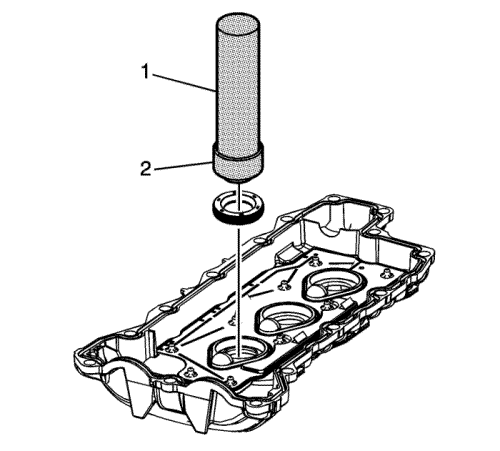
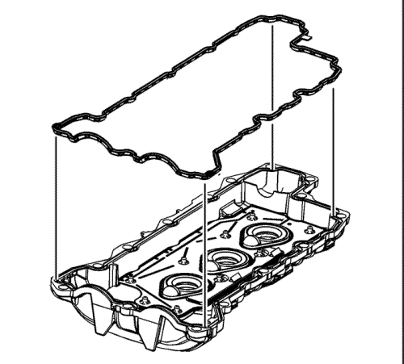
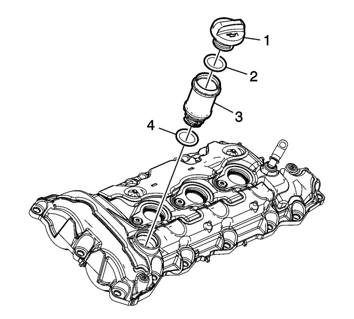
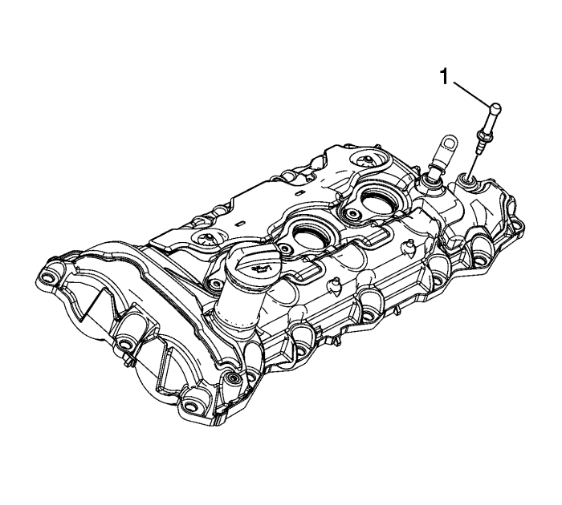
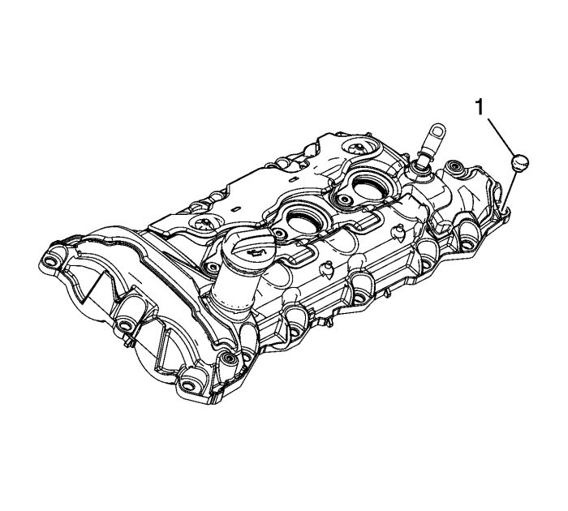
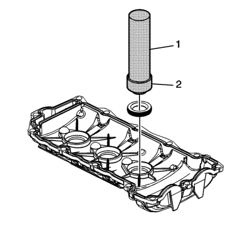
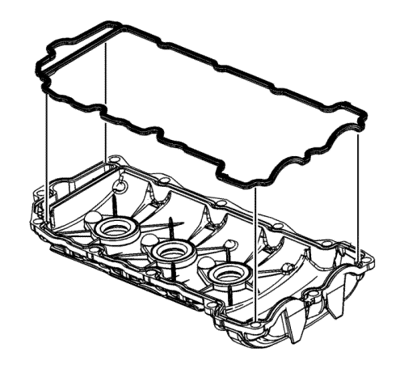
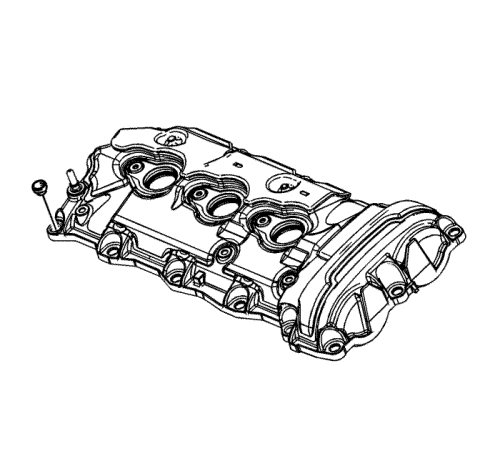

Montaje de la tapa del árbol de levas
Herramientas especiales
| • | DT 5590 Arrastrador de junta y cojinete |
| • | EN 24254-A Herramienta de montaje del retén de aceite |
Si desea informarse sobre herramientas regionales equivalentes, consultar Herramientas especiales .
Cubierta izquierda del árbol de levas

- Monte las NUEVAS juntas de los tubos de protección de las bujías del lado izquierdo con el arrastrador DT 5590 (1) y la herramienta de montaje EN 24254-A (2).

- Monte la NUEVA junta de la tapa del árbol de levas izquierdo.

- Al montar un tubo de llenado de aceite y una tapa del árbol de levas NUEVOS, coloque el tubo de llenado de aceite (3) y la junta tórica del tubo de llenado de aceite (4). Lubrique ligeramente la junta tórica con aceite de motor antes de insertar el tubo de llenado de aceite en la tapa del árbol de levas. Asegúrese de que el tubo está bien asentado en las dos lengüetas de sujeción.
- Monte el tapón de llenado de aceite (1) con una NUEVA junta tórica (2).
Precaución: Consulte Precaución con las fijaciones en la sección Prólogo

- Monte el perno de bola de la pantalla protectora de las válvulas de inyección (1) y apriételo a 10 N·m (89 lib. pulg.).

Nota: El pasamuros de tornillo de la tapa del árbol de levas se deberá montar en el orificio del tornillo del árbol de levas antes de montar el tornillo.
- Monte los pasamuros NUEVOS de tornillo de la tapa del árbol de levas izquierdo (1).
Cubierta derecha del árbol de levas

- Monte las NUEVAS juntas de los tubos de protección de las bujías de las bobinas del lado derecho con el arrastrador DT 5590 (1) y la herramienta de montaje EN 24254-A (2).

- Monte la NUEVA junta de la tapa del árbol de levas derecho.

Nota: El pasamuros de tornillo de la tapa del árbol de levas se deberá montar en el orificio del tornillo del árbol de levas antes de montar el tornillo.
- Monte los pasamuros NUEVOS de tornillo de la tapa del árbol de levas derecho.
| © Copyright Chevrolet Europe. All rights reserved |